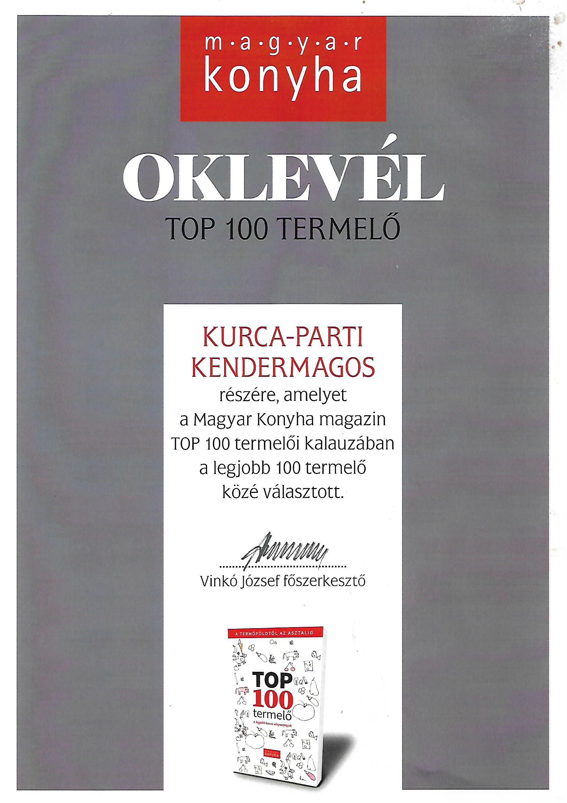
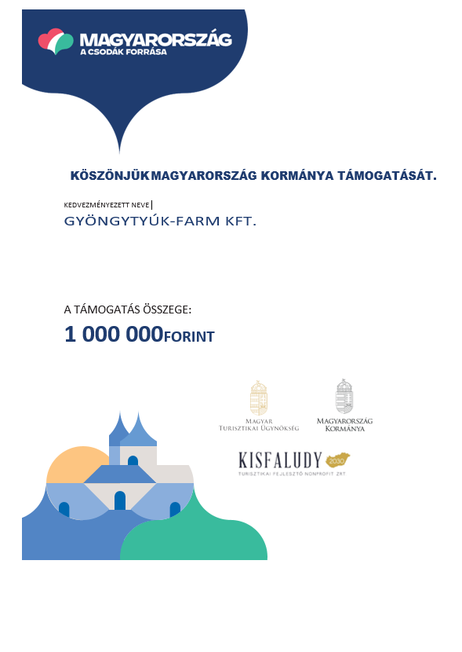

Évtizedes baromfitenyésztői tapasztalattal, Dél-Alföldön, Csongrád-Csanád megyében, Szentesen őstermelőként, családi vállalkozásban kezdtük el nevelni napos koruktól gyöngytyúkokat. Mára már túlnőtte magát a vállalkozás, ezért az őstermelői mellett Kft.-t is alapítottunk, amely 2018 év augusztusától Gyöngytyúk-Farm Kft. néven kezdte meg működését.
Családi vállalkozásunk által hagyományos módon tenyésztett, különleges húsminőségű baromfit forgalmazunk. Tanyasi jellegű hús, ízviláguk a régi időket idézik vissza.
Határozott célunk volt olyan farmot létrehozni, ahol állataink a
klasszikus értelembe, jól érezhetik magukat.
A háziasszonyok nyugodt szívvel tehetik az ételt a család asztalára, mert finom és egészséges
A
gyöngytyúkok és házityúkok (csirke, kakas) napos korától való nevelését, egészen az
értékesítésig ez
a
100%
- ban magyar tulajdonban lévő gazdasági társaság végzi.
Folyamatosan, állatorvossal
ellenőrzött
baromfikat nevelünk
Állatainkat mély almos - szabad tartásban tartjuk, ami azt jelenti, hogy folyamatosan
biztosított
számukra a szabadban történő kijárás, kapirgálás, pihenés.
Növekedésük természetes ütemben zajlik, vágott súlya belsőséggel:
csirkéké, kakasoké 2-3 kg/db
a gyöngytyúké 1,8-2,2 kg/db
Fontos az élelmiszer biztonság, ezért ezt a tevékenységet EU minősítésű, magas szakmai és technológia szintű üzemben végezzük, ahol a nyomon követés folyamatosan biztosított és ellenőrizhető. Kis tétel esetén, kistermelői házivágás is lehetséges.
Magyarországon, területi korlát nélkül, egész évben hűtőautókkal
végezzük.
Különböző, kiváló éttermek elégedettségét jelzi a folyamatos és egyre növekvő heti rendelés, mely
éttermek nagyrészt a balatoni, hévízi, budapesti régiókban találhatóak.
Termékeink iránt nemcsak az éttermek és szállodák, hanem a hazai kiskereskedelmi láncok és az
élelmiszer
nagykereskedők is folyamatosan érdeklődnek. Természetesen magánemberek kiszolgálása is
lehetséges.
Termékünkkel kapcsolatos információkkal, megrendeléssel (előhűtött, vagy fagyasztott, egész, vagy darabolt), szállítással és árakkal kapcsolatban kérem vegye fel velünk a kapcsolatot.
KapcsolatA magyarországi díjazott szakácsok, nívós éttermek kiváló minőségű, prémium termékként jellemeztek, és a 100 legjobb hazai termelői közé javasoltak bennünket, amely címet a Magyar Konyha magazin 2020 decemberében megjelenő TOP 100 Termelői kalauzában közzé is tett.
Szintén az elégedett éttermek javaslatára a Kisfaludy2030 Turisztikai Fejlesztő Nonprofit Zrt. a „Hazai (kis)termelők támogatása” keretében, a legjobb hazai gasztronómiai alapanyagok előállítóit tevékenységükkel kapcsolatos költségeikre, visszanem térítendő támogatásukban részesített.
